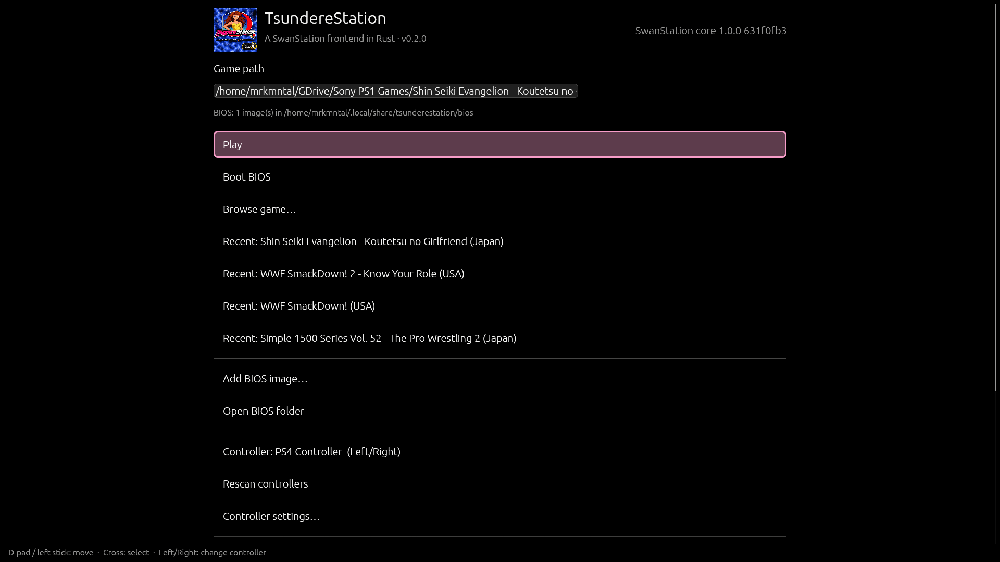
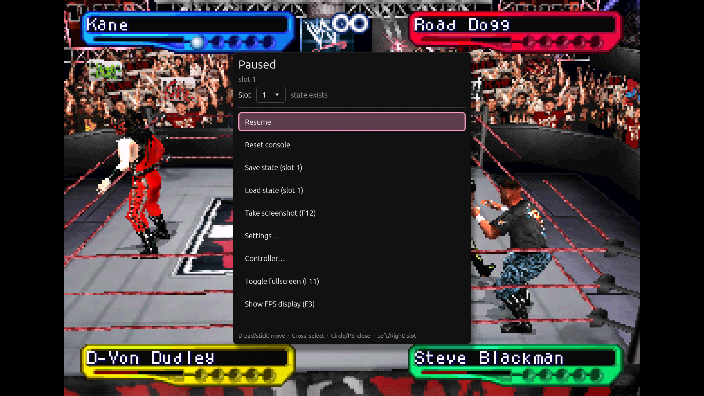
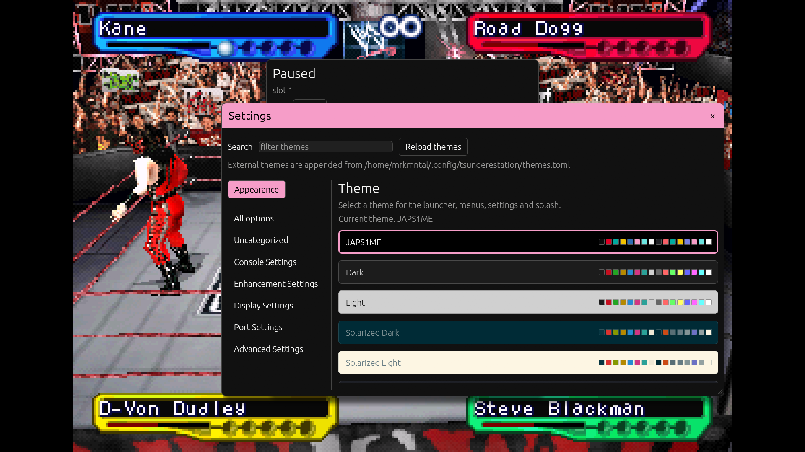
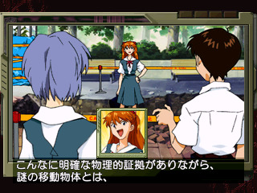
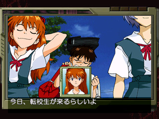
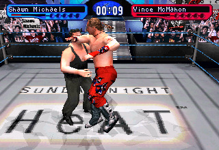
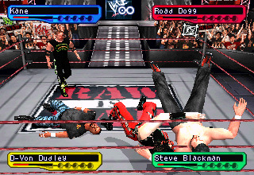

TV-first interface
Large rows, a clear focus outline and controller navigation for the launcher, file browser and pause menu. Settings stay out of the way when you are playing.
PS1 · SwanStation libretro · Rust + egui
A standalone PlayStation 1 front-end that focuses on the games.
“Anta baka?! Are you an idiot?!” — The Tsundere, after catching you using a non-free PS1 emulator like DuckStation.
Free software, built with Rust and egui. A TV/controller-first launcher, themes, save states, a Memory Card Manager, screenshots, and multi-disc swapping. No Discord. No RetroAchievements. No online services.
Prefer the source? View on GitHub →

v0.2.0 · JAPS1ME default theme
A controller-friendly front-end that stays out of the way.






The useful parts of an emulator front-end, without the platform.
Large rows, a clear focus outline and controller navigation for the launcher, file browser and pause menu. Settings stay out of the way when you are playing.
39 embedded themes with JAPS1ME as the default. The theme picker shows each palette live, and external themes can be loaded from your config directory.
Inspect .srm, .mcd and DexDrive .gme cards. Import saves, convert cards, delete with backups, preview icons and copy from DuckStation or RetroArch.
Press F12 or use the pause menu to save a JPEG of the current game frame. Files are named gamename-YYYYMMDDHHMMSS.jpg.
Load a multi-disc .m3u, open the pause menu and swap discs without restarting the core. Single-disc images simply show one disc image.
No Discord integration, no RetroAchievements, no account system, no telemetry. Free software under GPL-3.0-or-later, focused on playing PS1 games.
Linux x86_64 AppImage. The current build is v0.2.0.
TsundereStation-0.2.0-x86_64.AppImage · 15 MB
Built on Debian 13. Requires glibc 2.41 or newer. If FUSE2 is unavailable, run with --appimage-extract-and-run.
SHA-256
1133cef0bb346f4e4a7b3e1c5511e7b07e1575f7833e6f2a72f3ff9bb39fb041
Verify: sha256sum TsundereStation-0.2.0-x86_64.AppImage
Download the AppImage, or build the core and frontend from source.
chmod +x TsundereStation-0.2.0-x86_64.AppImage
./TsundereStation-0.2.0-x86_64.AppImageYou need a Rust toolchain, SDL2 development files, and an OpenGL/X11 or Wayland toolchain.
git clone https://github.com/MARKMENTAL/TsundereStation.git
cd TsundereStation
make -f Makefile.libretro platform=unix -j"$(nproc)"
cd frontend
cargo build --release
./target/release/tsunderestationFull build, controller and configuration notes are in the frontend README.
No. TsundereStation is a standalone front-end that loads the SwanStation libretro core directly. RetroArch is not required.
Yes. The project is licensed under GPL-3.0-or-later.
Yes. The Memory Card Manager can inspect and import .srm and .mcd cards, convert DexDrive .gme cards, and create backups. Installing cards back into another emulator is intentionally manual.
Yes, when the game is loaded from a multi-disc .m3u playlist. The pause menu then offers a disc picker and switches discs without restarting the core.
BIOS images are optional. If no BIOS is present, the core falls back to OpenBIOS. You can add a BIOS image from the launcher.
No. That is deliberate. TsundereStation focuses on playing PS1 games with a good UI, not on service integrations or account features.
The mascot is The Tsundere. She has opinions about non-free emulators and very little patience for feature creep.